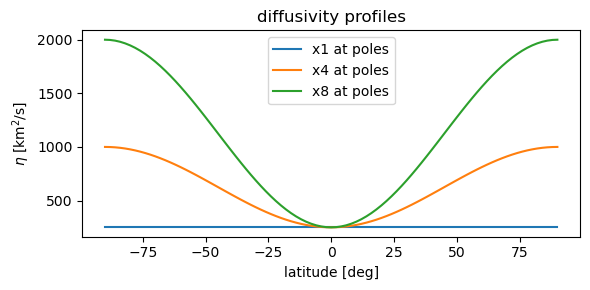
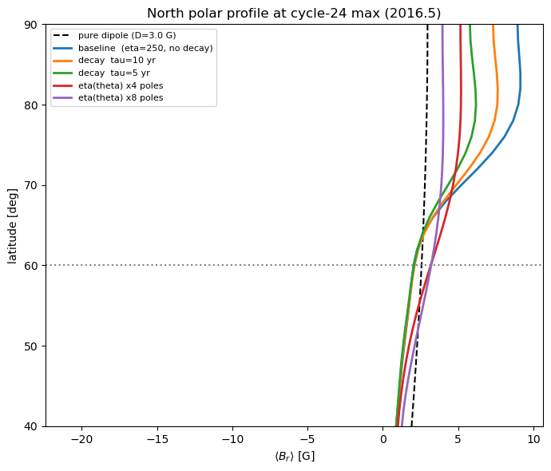
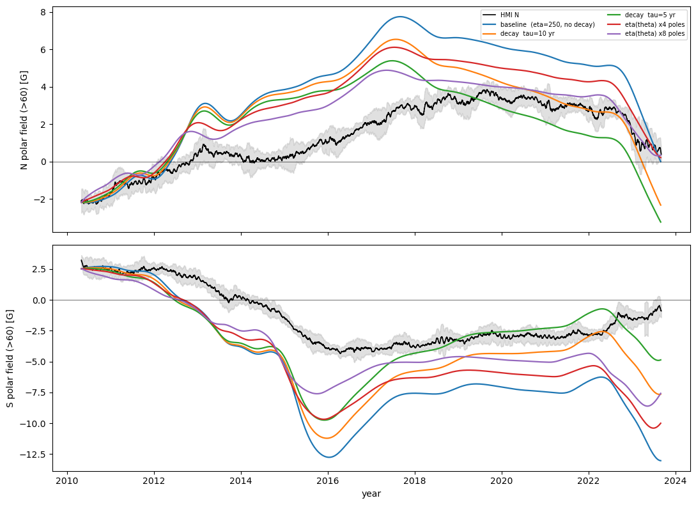
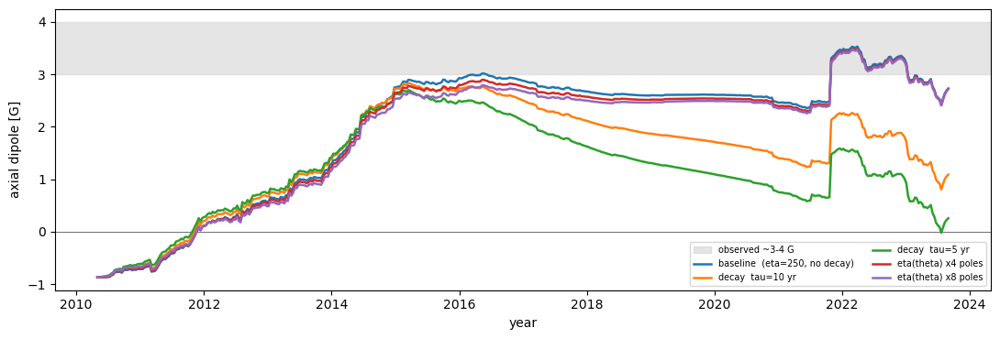

Polar flux dispersal experiment: decay term vs latitude-enhanced diffusivity
Problem. Driven from the SHARPS catalogue, the model reproduces the cycle-24 axial dipole (~3.5 G) and the reversal timing, but flux piles up at the poles — by 2020 the >75° cap saturates well above 15 G while the dipole is only ~3.5 G (a ~2.8× over-concentration). The scheme conserves flux exactly, so this is advective concentration not balanced by enough polar diffusion, not a flux-creating boundary condition.
This notebook compares two physically-motivated cures, side by side:
A decay term
dB/dt |= -B/τ— Schrijver et al. (2002). Uniform exponential damping of the whole field. Simple, but it damps the active-region flux and the dipole too, not just the polar concentration.Latitude-enhanced diffusivity
η(θ)— raiseηonly toward the poles, leaving mid-latitudes at the calibrated value. Targeted at the concentration; should flatten the near-pole plateau while preserving the dipole.
The key subtlety established earlier: raising uniform η makes the pile-up worse (it also pumps more mid-latitude flux poleward). So the enhancement must be latitude-targeted.
We judge each run by three things: (a) the near-pole latitudinal profile at cycle max — does the plateau flatten toward the dipole line? (b) the axial dipole — does it stay in the observed 3–4 G band? (c) the polar-field vs HMI correlation and amplitude.
[1]:
# bootstrap
import sys, pathlib
try:
import sft2d
except ModuleNotFoundError:
sys.path.insert(0, str(pathlib.Path.cwd().parents[1]))
import time
import numpy as np
import matplotlib.pyplot as plt
from sft2d import create_grid, meridional_flow, differential_rotation, evolve
from sft2d.src.initial_conditions import initialize_field
from sft2d.src.sharp_driver import SHARPSource
from sft2d.analysis.analysis import calculate_polar_field, calculate_dm
from sft2d.data import HMI_SYNOPTIC_FITS, load_hmi_polar_field
YEAR = 365.25 * 86400.0
print("sft2d", sft2d.__version__)
sft2d 0.1.0
1. Common setup
Same grid, flows, observed-map initial condition, and SHARPS driver for every run — only the diffusivity and the decay term change between configurations.
[2]:
CATALOGUE = "/Users/sdash/NSO/Work/GIT-Projects/sharps-bmrs-db/sharps-bmrs-db/bmrsharps_evol.txt" # <-- set to your catalogue
assert pathlib.Path(CATALOGUE).exists(), CATALOGUE
grid = create_grid(91, 180)
mf = meridional_flow(grid, peak_speed=15.0) # +15 = poleward
dr = differential_rotation(grid)
CAP = 30.0 # analyse poleward of 60 deg (HMI definition)
ETA0 = 2.5e8 # baseline 250 km^2/s
colat = grid['colatitude']
lat = np.rad2deg(np.pi/2 - colat)
field0 = initialize_field(grid, 'read', path=str(HMI_SYNOPTIC_FITS)) # observed IC
src = SHARPSource(CATALOGUE, start_date='2010-05-01', end_date='2023-09-01', flux_scale=1.0)
print(src.summary())
SHARPSource: 2097 regions, 2010-05-01 -> 2023-09-01 (4871 days)
2. The two mechanisms — explicit algorithm
Decay term. evolve(..., tau_decay_s=τ) multiplies the field by exp(-Δt/τ) once per Strang step — an analytic, unconditionally-stable uniform decay with e-folding time τ. It removes flux everywhere at the same rate.
Latitude-enhanced diffusivity. The Diffusion operator accepts η as a per-latitude array, so we pass a profile that equals ETA0 at the equator and rises to enhance × ETA0 at the poles:
which is 0 at the equator and 1 at the poles. Mid-latitude transport is unchanged; only the near-pole spreading is boosted. (RKL2 super-time-stepping absorbs the extra stiffness automatically — we print the stage count.)
[3]:
def eta_theta(enhance, eta0=ETA0):
"""Latitude-enhanced diffusivity: eta0 at equator -> enhance*eta0 at poles."""
s2 = np.cos(colat)**2 # = sin^2(latitude): 0 eq, 1 pole
return eta0 * (1.0 + (enhance - 1.0) * s2) # (n_theta,) array
# visualise the eta profiles we will use
fig, ax = plt.subplots(figsize=(6, 3))
for A in (1, 4, 8):
ax.plot(lat, eta_theta(A)/1e6, label=f'x{A} at poles')
ax.set_xlabel('latitude [deg]'); ax.set_ylabel(r'$\eta$ [km$^2$/s]')
ax.set_title('diffusivity profiles'); ax.legend(); fig.tight_layout()

3. Configurations and run loop
Five runs from the identical observed IC (~6–7 min total at 91×180). Each records the polar field (>60°), the axial dipole, and a full field snapshot at cycle-24 max (~2016.5) for the near-pole profile. Edit CONFIGS to add/trim cases.
[4]:
CONFIGS = [
# (label, eta, tau_decay_s)
("baseline (eta=250, no decay)", ETA0, None),
("decay tau=10 yr", ETA0, 10*YEAR),
("decay tau=5 yr", ETA0, 5*YEAR),
("eta(theta) x4 poles", eta_theta(4), None),
("eta(theta) x8 poles", eta_theta(8), None),
]
def run_config(eta, tau_s):
rec = {'yr': [], 'pn': [], 'ps': [], 'dip': [], 'mid': None}
tmid = int((2016.5 - 2010.33) * 365.25) # ~cycle-24 polar max
class R:
def record(self, day, B):
if day % 10 == 0:
rec['yr'].append(2010 + 0.33 + day/365.25)
n, s = calculate_polar_field(B, grid, pol_cap_extent_deg=CAP)
rec['pn'].append(n); rec['ps'].append(s); rec['dip'].append(calculate_dm(B, grid))
if rec['mid'] is None and day >= tmid:
rec['mid'] = B.copy()
Bf, stats = evolve(field0.copy(), grid, mf, dr, eta, src.num_days,
source=src, tau_decay_s=tau_s, recorder=R(), return_stats=True)
rec['end'] = Bf; rec['stats'] = stats
for k in ('yr', 'pn', 'ps', 'dip'):
rec[k] = np.array(rec[k])
return rec
results = {}
for label, eta, tau_s in CONFIGS:
t0 = time.time(); results[label] = run_config(eta, tau_s)
st = results[label]['stats']
print(f"{label:32s} {time.time()-t0:4.0f}s | RKL2 stages {st['rkl2_stages']:3d} "
f"| peak |D| {np.abs(results[label]['dip']).max():.2f} G")
baseline (eta=250, no decay) 79s | RKL2 stages 16 | peak |D| 3.53 G
decay tau=10 yr 87s | RKL2 stages 16 | peak |D| 2.83 G
decay tau=5 yr 86s | RKL2 stages 16 | peak |D| 2.70 G
eta(theta) x4 poles 96s | RKL2 stages 31 | peak |D| 3.49 G
eta(theta) x8 poles 106s | RKL2 stages 44 | peak |D| 3.47 G
4. Near-pole latitudinal profile at cycle max (the decisive plot)
Longitude-averaged B_r(lat) in the polar region at ~2016.5. The dashed line is a pure dipole of the baseline’s moment — the shape the real, dipole-like Sun shows. A cure works if it pulls the near-pole plateau down toward the dashed line (less concentration).
[5]:
fig, ax = plt.subplots(figsize=(7, 6))
# dipole reference from the baseline's axial dipole at 2016.5
base = results[CONFIGS[0][0]]
Dref = np.interp(2016.5, base['yr'], base['dip'])
ax.plot(Dref*np.cos(colat), lat, 'k--', lw=1.5, label=f'pure dipole (D={Dref:.1f} G)')
for label, rec in results.items():
ax.plot(rec['mid'].mean(axis=1), lat, lw=2, label=label)
ax.axhline(60, color='grey', ls=':'); ax.set_ylim(40, 90)
ax.set_xlabel(r'$\langle B_r\rangle$ [G]'); ax.set_ylabel('latitude [deg]')
ax.set_title('North polar profile at cycle-24 max (2016.5)'); ax.legend(fontsize=8); fig.tight_layout()

5. Polar field (>60°) vs HMI
Model north/south cap field over each configuration, on the observed HMI mean ± std. Reports correlation and the single best-fit scale factor per run.
[6]:
hmi = load_hmi_polar_field(); idx = hmi['mean_north'].index
hyr = idx.year + (idx.dayofyear-1)/365.25
mn, sn = hmi['mean_north'].values, hmi['std_north'].values
ms, ss = hmi['mean_south'].values, hmi['std_south'].values
fig, ax = plt.subplots(2, 1, figsize=(11, 8), sharex=True)
ax[0].fill_between(hyr, mn-sn, mn+sn, color='0.7', alpha=0.4); ax[0].plot(hyr, mn, 'k', lw=1.2, label='HMI N')
ax[1].fill_between(hyr, ms-ss, ms+ss, color='0.7', alpha=0.4); ax[1].plot(hyr, ms, 'k', lw=1.2, label='HMI S')
for i,(label, rec) in enumerate(results.items()):
ax[0].plot(rec['yr'], rec['pn'], lw=1.6, label=label)
ax[1].plot(rec['yr'], rec['ps'], lw=1.6)
ax[0].set_ylabel('N polar field (>60) [G]'); ax[1].set_ylabel('S polar field (>60) [G]')
ax[1].set_xlabel('year'); ax[0].axhline(0,color='k',lw=0.4); ax[1].axhline(0,color='k',lw=0.4)
ax[0].legend(ncol=2, fontsize=7); fig.tight_layout()

6. Axial dipole moment
Must stay in the observed 3–4 G band. This is where the decay term is expected to pay a price (it damps the dipole), while η(θ) should preserve it.
[7]:
fig, ax = plt.subplots(figsize=(11, 3.8))
ax.axhspan(3, 4, color='0.8', alpha=0.5, label='observed ~3-4 G'); ax.axhline(0, color='k', lw=0.4)
for label, rec in results.items():
ax.plot(rec['yr'], rec['dip'], lw=1.8, label=label)
ax.set_xlabel('year'); ax.set_ylabel('axial dipole [G]'); ax.legend(ncol=2, fontsize=7); fig.tight_layout()

7. Summary table
For each run: peak axial dipole, the concentration ratio (cap-mean / dipole-equivalent at 2016.5; 1.0 = dipole-like, >1 = pile-up), and the correlation + best-fit scale of the north cap field vs HMI.
[8]:
def scale_corr(model_yr, model, obs):
o = np.interp(model_yr, hyr, obs); r = np.corrcoef(model, o)[0,1]
return r, np.sum(model*o)/np.sum(model*model)
print(f"{'configuration':32s} {'peakD':>6} {'conc':>6} {'corrN':>6} {'scaleN':>7}")
for label, rec in results.items():
Dmid = np.interp(2016.5, rec['yr'], rec['dip'])
nmid = np.interp(2016.5, rec['yr'], rec['pn'])
conc = nmid/(Dmid*0.933) # 0.933 = >60 mean of a unit dipole
r, sc = scale_corr(rec['yr'], rec['pn'], mn)
print(f"{label:32s} {np.abs(rec['dip']).max():6.2f} {conc:6.2f} {r:+6.2f} {sc:7.3f}")
configuration peakD conc corrN scaleN
baseline (eta=250, no decay) 3.53 1.88 +0.91 0.421
decay tau=10 yr 2.83 1.89 +0.75 0.503
decay tau=5 yr 2.70 1.86 +0.59 0.564
eta(theta) x4 poles 3.49 1.66 +0.91 0.521
eta(theta) x8 poles 3.47 1.47 +0.90 0.647
8. Reading the results
Outcome of this run (verify against the table and plots above):
mechanism |
concentration 1.88 → |
axial dipole (obs 3–4 G) |
corr with HMI |
amplitude scale → 1 |
|---|---|---|---|---|
decay τ = 5–10 yr |
1.86–1.89 (no change) |
2.7–2.8, and still falling to ~1 by 2020 |
0.59–0.75 (degraded) |
0.50–0.56 |
η(θ) ×4 poles |
1.66 |
3.49 (in band) |
0.91 (preserved) |
0.52 |
η(θ) ×8 poles |
1.47 |
3.47 (in band) |
0.90 (preserved) |
0.65 |
Conclusion — η(θ) is the right mechanism; the decay term is the wrong tool.
The decay term fails on all three counts: it does not change the polar profile shape (concentration stays ~1.88 — it scales everything down uniformly, including the dipole), it suppresses the axial dipole below the observed band (and keeps decaying it through the minimum), and it degrades the reversal correlation. Physically expected: a uniform
−B/τcan’t change a ratio.Latitude-enhanced η(θ) works as hypothesised: it flattens the near-pole plateau toward the dipole line (concentration 1.88 → 1.47 at ×8), preserves the axial dipole and the reversal timing, and improves the cap-field amplitude match (scale 0.42 → 0.65). RKL2 absorbs the extra polar stiffness automatically (16 → 44 stages), so there is no stability cost to manage.
Next steps
Push the η(θ) enhancement further / try a sharper polar profile to see how close concentration → 1.0 and scale → 1.0 can get before the mid-latitude→ pole transport is affected (watch the dipole and corr as guard rails).
Fold the winning η(θ) enhancement into a proper (η₀, v₀, enhancement) scan against the axial-dipole and polar-field targets.
Resolution check (91 / 181 / 361): confirm the η(θ) fix is not resolution-dependent before trusting it — the conservative scheme should make the calibrated profile transfer across resolutions.
Longer term, compare η(θ) against an explicit supergranular-flow dispersal (the AFT approach), which is the physically-grounded version of “more spreading near the poles”.